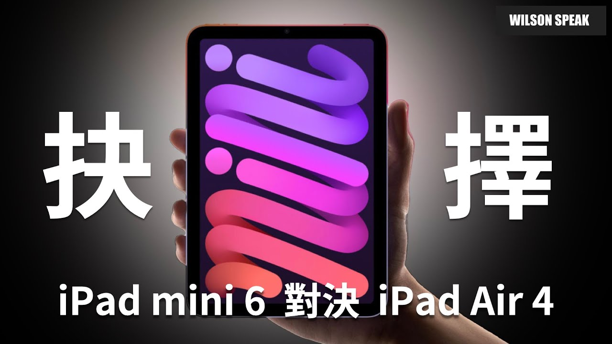

iPad mini、Air、Pro 怎麼選？先拿你每天做的事來比

原片發布 2021-09-15 · 點封面看原片。
買平板最容易卡在「要不要再加一點預算」。但加到更高規格之前，先想你會拿它做什麼、在哪裡用：通勤拿著看書，和放在桌上邊讀教材邊寫字，重視的地方就不一樣。
這篇延伸自 Wilson 2021 年比較 iPad mini、Air 和 Pro 的影片。它不是現在全系列的購買排行榜，而是把當時討論的使用問題留下來，幫你整理試用和選購清單。
先把這支 2021 年的影片放回當時
原片發布於 2021 年 9 月，討論的是 iPad mini 第六代、Air 第四代與當年的 Pro。mini 第六代的官方規格包含 8.3 吋螢幕、A15 晶片、USB-C 與 Apple Pencil 第二代支援，這些都是特定代數的資料。
同樣叫 Air、Pro 或 mini，不同年份的螢幕、配件與功能可能改變。若正在看新機，應重新查目標型號；若看的是舊機，也要把今日的系統與 App 支援補進來。不要只憑系列名稱套用整段舊片的結論。
閱讀和攜帶，先拿起來用一會兒
小尺寸通常比較方便攜帶，但閱讀是否舒服還看內容。可調字體的電子書，和版面固定的教材 PDF，是不同的使用情境。能把平板放進包包，不代表拿出來看字就一定適合。
試用時帶一份自己常看的文件，看是否要一直縮放、橫向移動。也試著拿一會兒，換成坐著或站著的姿勢。連保護殼、支架與鍵盤一起考慮，才接近日常實際要攜帶的重量。
- 打開自己常看的文件，而非只看展示首頁。
- 試字體、縮放和翻頁，觀察能否舒服閱讀。
- 確認帶保護殼後的持握與包內空間。
| 用途 | 可以怎麼試 |
|---|---|
| 閱讀、通勤 | 拿常看的文件，試字體大小與持握 |
| 筆記、畫圖 | 用必用 App，確認筆與畫布操作 |
| 工作、配件 | 實測檔案流程、鍵盤與外接裝置 |
| 購買舊機 | 查 App 支援、機況與啟用鎖定 |
選購問題整理；原片討論的是 2021 年機型，不能直接當作現在全系列的規格比較。
畫圖與筆記，要看畫面和工具
畫圖與筆記要看畫布空間、工具列和慣用 App。把教材與筆記並排時，畫面會不會太擠？寫字時手掌放哪裡？這些都比只問「能不能用筆」更接近每天會碰到的問題。
筆的相容性要核對到機型與代數；支援 Apple Pencil 並不表示每一支都能用。拿想買的組合試寫、縮放和切工具，再確認 App 支援的多工方式。專業或興趣用途都各有需求，不能只按身份決定一定要 Pro。
追劇和遊戲，不只看晶片名字
追劇可以試字幕大小、畫面比例、喇叭和擺放姿勢。大畫面比較好看清細節，也可能比較難久拿；喜歡躺著看和固定放桌上的人，對尺寸與支架的取捨就可能不同。
遊戲也要看你真的會玩的那款。操作按鈕能否舒服碰到、玩一段時間後的表現、當前版本的需求，都比只看晶片名字有用。舊評測的效能不能保證今天同一遊戲仍有相同表現，也不能替你決定哪個大小最好握。
配件、容量和連線，都會改變使用方式
主機之外，把筆、鍵盤、保護殼和需要的轉接器一起列入預算。若想拿來工作，試一次真正的檔案流程：下載、編輯、傳給別人，以及必要的登入。平常用的桌面軟體若沒有相同功能，硬體再強也不能直接補上。
USB-C 的外型相同，不代表所有 iPad 都支援相同速度、顯示輸出或周邊。外接儲存、讀卡機與螢幕都要查目標機型及 App 的限制。容量則看離線檔案、遊戲與專案，不能把雲端空間當成所有情境都能替代本機。
- 列出一定會使用的 App 和配件完整型號。
- 試著完成一項真實工作，確認檔案能交付。
- 估算離線使用需求，再決定容量與連線方式。
如果買的是舊機，重新確認支援與機況
看舊機要重新確認必用 App 的系統要求、可用更新與實際功能。不要只問能不能開機或能不能裝 App，也要測你需要的登入、繪圖、匯出和周邊連接。支援狀態會變，購買當下再核對。
機況則檢查螢幕、觸控、充電與電池表現，並依官方程序確認已解除前一位使用者的啟用鎖定。維修選項和配件來源也要先查。舊片可以幫你理解用途，不能代替眼前這一台的驗機。
你可能還想問
買給長輩看影片，怎麼試最準？
讓實際使用的人試字幕、音量、持握和操作，再確認目標機型能使用需要的服務。不要直接把較舊或某個系列等同一定夠用。
mini 適合看教材 PDF 嗎？
帶一份平常看的教材試，觀察字是否太小、是否頻繁縮放。可調字體的電子書與固定版面 PDF 不同，別只拿展示文字判斷。
可以用 iPad 取代電腦嗎？
先把一整項工作從登入到交付都試完，再確認 App、檔案與周邊限制。能完成你的必要流程才有意義，系列名稱或晶片規格不能保證取代。
影片與參考資料
原片發布 2021-09-15。文章整理 2026-11-14，依影片公開字幕、說明延伸，並以官方資料校訂。實際設定請對照你的型號與版本。